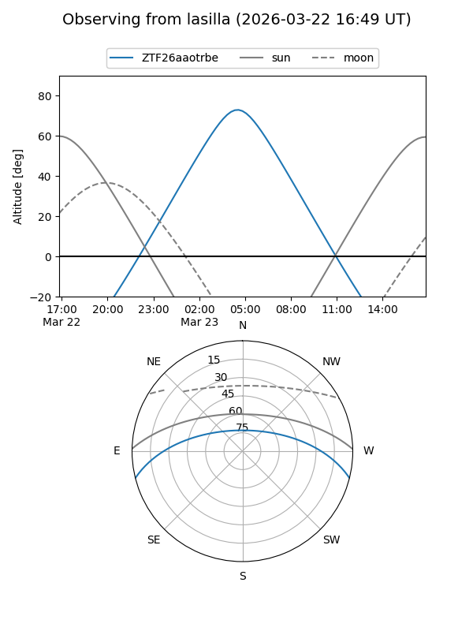
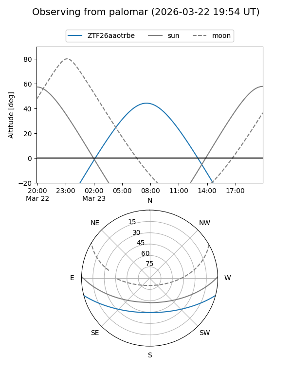
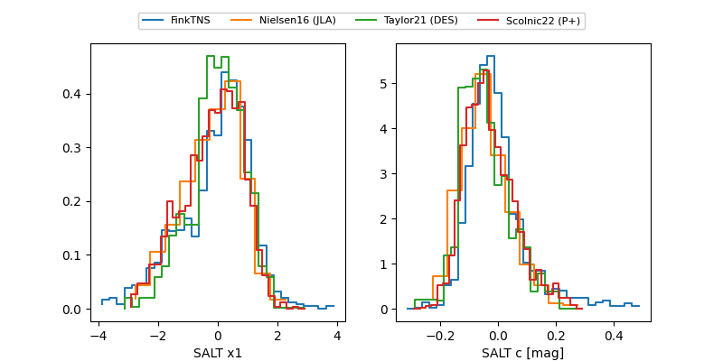

ZTF26aaotrbe
Target ZTF26aaotrbe at 2026-03-23 08:48
Aliases and brokers:
FINK: link
Lasair: link
ALeRCE: link
alt names
ZTF26aaotrbe (ztf,fink_ztf)
Coordinates:
equatorial (ra, dec) = 177.1893,-12.12207
equatorial (HMS+DMS) = 11:48:45.44,-12:07:19.46
galactic (l, b) = (279.7320,+47.90617)
Flags:
Photometry:
last ztfg=17.43
1 ztfg detections
Lightcurve
Visibility


Additional plots
